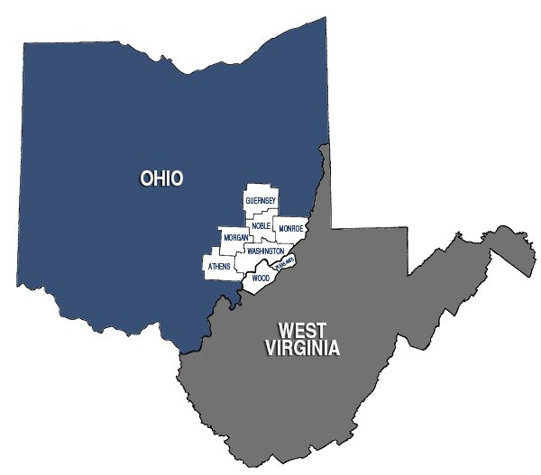

HOME /LOWELL, OHIO / MID-OHIO VALLEYLocal knowledge.
Local knowledge.
Across state lines.
Licensed in Ohio and West Virginia for general contracting.

THE RIGHT TEAM, IN YOUR AREA
Where we work.
Septic installation & repair
Approved in Washington, Athens, Noble, Guernsey, Morgan and Monroe Counties in Ohio. Motor repairs are also offered in West Virginia.
Yearly septic inspections
Licensed to perform the required yearly inspections in Noble and Guernsey Counties, Ohio.
Septic pumping
Ohio: Athens, Morgan, Noble and Washington Counties.
West Virginia: in the vicinity of Parkersburg, Vienna, Williamstown and St. Marys.